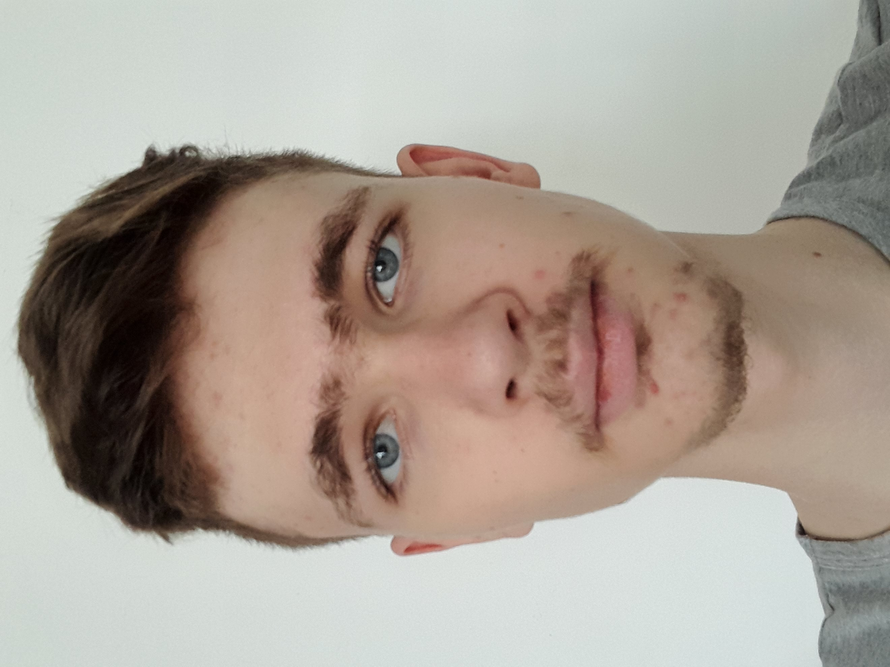

Kto Som?
Volám sa Jozef Pogran a som študent aplikovanej informatiky na FEI STU. Zameranie môjho štúdia je MSUS (modelovanie a simulácia udalostných systémov). Zaujímam sa najmä o oblasť umelej inteligencie a možnosti jej využitia.
Mojím cieľom je ďalej si rozvíjať praktické programátorské zručnosti a získavať skúsenosti s návrhom a vývojom reálnych softvérov.
Kľúčové oblasti
- Webové technológie
- Python
- Umelá inteligencia